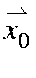
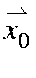
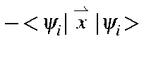

The intensity of a UV-Visible absorption band is a function of the oscillator strength and of the energy of the absorption band. Both quantities are printed when a C.I. calculation is done, and MECI is used. In the output, the oscillator strength, in electron-Angstroms is printed under the heading "POLARIZABILITY".
The absorption intensity is proportional to the energy times the square of the oscillator: n[(mx)2 + (my)2 + (mz)2].
Theory
A system can go from the ground state to an excited state as the result of the absorption of a photon. The probability of this happening, k, is given*** in terms of the oscillator integral: 1
1
In order to evaluate 1, a property of integrals of the type:
The starting point for evaluating 1 is to calculate the molecular
orbital oscillator:
The operator
 can be expanded into three terms:
can be expanded into three terms:
The zero or origin of the position operators is not immediately obvious.
In general it would not be the origin of the Cartesian coordinate
system used. The origin of the position operator would depend on the
individual M.O. and would be defined so that:
To determine the origin, the position operators are replaced by
 ,
where

is the distance from the origin of the Cartesian
coordinate system used to the origin of the position operator. Then:
,
where

is the distance from the origin of the Cartesian
coordinate system used to the origin of the position operator. Then:
The integrals over molecular orbitals are evaluated by first calculating
$">